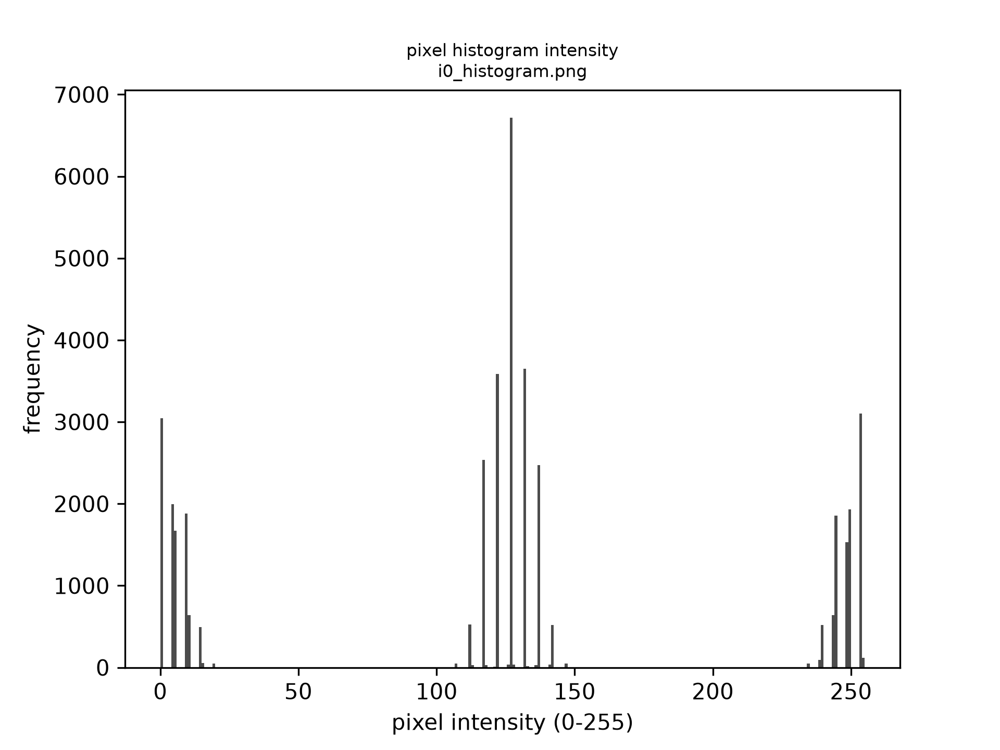

Image Generation
The source for the commands on this page is
dictk's ownrostaandcheckerboardsubcommands — seedictk --help.
Note: the images embedded on this page are rendered as PNG (
--format png), notdictk's default TIFF. Browsers don't natively render TIFF in<img>tags, so a TIFF embedded here simply wouldn't display.Among the alternatives, PNG also wins on its own merits: it's lossless, whereas JPG's compression tends to smear hard edges and speckle-pattern detail (for the 200x200 checkerboard on this page: TIFF 40,256 bytes, JPG 6,760 bytes, PNG only 418 bytes — JPG is actually larger than PNG here, because its block-based compression is a poor fit for hard-edged content like a checkerboard). SVG doesn't help either: since there's no vector structure to trace,
dictk's SVG output just wraps that same PNG in a base64-encoded XML container, which comes out to 809 bytes here — roughly double the raw PNG for no rendering benefit.TIFF remains
dictk's command-line default, since it's the lossless, uncompressed format conventionally used for DIC and other scientific-imaging workflows.
CLI vs. API: the subcommands on this page (
dictk rosta,dictk checkerboard) write an image file to disk — that's their whole job. The corresponding Python functions,dictk.rostaanddictk.checkerboard, take the same parameters but perform no file I/O: they return a NumPy array only. That keeps the Python API composable in a functional style — arrays can be piped through further functions (e.g.combine_imagesbelow) before anything touches disk — and callers who do want a file calldictk.imaging.write_imageexplicitly, as a separate step. See each function's docstring (rendered in the API reference) for details.
We create a synthetic example speckle pattern with the built-in rosta
image generator. It implements the Rosta algorithm described by
Olufsen (Olufsen SN,
Andersen ME, Fagerholt E. muDIC: An open-source toolkit for digital image
correlation. SoftwareX. 2020 Jan 1;11:100391, Algorithm 1, page 6,
repository).
The help text for rosta:
dictk rosta --help
returns
usage: dictk rosta [-h] [--dot-size DOT_SIZE] [--density DENSITY]
[--smoothness SMOOTHNESS] [--random-seed RANDOM_SEED]
[--output OUTPUT] [--format {tiff,png,jpg,svg}]
[width] [height]
positional arguments:
width Image width in pixels (int), default: 200.
height Image height in pixels (int), default: 200.
options:
-h, --help show this help message and exit
--dot-size DOT_SIZE, -s DOT_SIZE
Dot pattern size factor, 0.0 to 100.0 (float),
default: 4.0.
--density DENSITY, -d DENSITY
Dot pattern density, 0.0 to 1.0 (float), default:
0.32.
--smoothness SMOOTHNESS, -m SMOOTHNESS
Smoothness factor, 0.0 to 100.0 (float), default: 2.0.
--random-seed RANDOM_SEED, -r RANDOM_SEED
Seed for reproducible pattern generation (int),
default: 42.
--output OUTPUT, -o OUTPUT
Output directory (path), default: current directory.
--format {tiff,png,jpg,svg}, -f {tiff,png,jpg,svg}
Output image format (str), default: tiff.
Create a synthetic image, 200 by 200 pixels, 50% dot density:
dictk rosta 200 200 --density 0.5 --format png -o .
Saved image: rosta_200w_by_200h_dot_4.0_den_0.5_smo_2.0.png
The result:

The Python equivalent returns the same pixel data as a NumPy array, with no file written:
import dictk
pattern = dictk.rosta(200, 200, density=0.5)
shape=(200, 200), dtype=uint8
Checkerboard
To make it easier to manually identify discrete points in the speckle
pattern, dictk can also generate a checkerboard test image:
dictk checkerboard 200 200 --format png -o .
Saved image: checkerboard_200w_by_200h_8x8.png

The Python equivalent, again returning an array with no file written:
import dictk
board = dictk.checkerboard(200, 200)
shape=(200, 200), dtype=uint8
Combining into a reference image
We combine the rosta speckle pattern with the checkerboard into a
reference image i0 by averaging their pixel values and normalizing
back to uint8:
from dictk.imaging import combine_images, read_image, write_image
speckle = read_image("rosta_200w_by_200h_dot_4.0_den_0.5_smo_2.0.png")
checker = read_image("checkerboard_200w_by_200h_8x8.png")
i0 = combine_images(speckle, checker)
write_image(i0, "i0.png")
Saved image: i0.png

Because both inputs are averaged and rescaled together, the checkerboard's squares stay clearly black or white while the speckle pattern shows up as gray texture within them:
- Where the checkerboard is black, speckle white maps to gray and speckle black stays black.
- Where the checkerboard is white, speckle black maps to gray and speckle white stays white.
That trimodal structure is visible in the pixel-intensity histograms below:
speckle and checkerboard are both roughly bimodal (dark/light), while i0
picks up a distinct middle hump from the black/white-speckle-on-opposite
checkerboard combinations.
Saved histograms: rosta_histogram.png, checkerboard_histogram.png, i0_histogram.png
| rosta | checkerboard | i0 |
|---|---|---|
 |  |  |